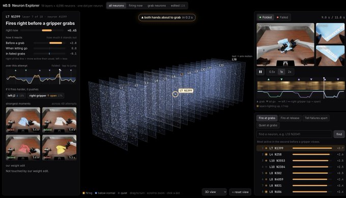
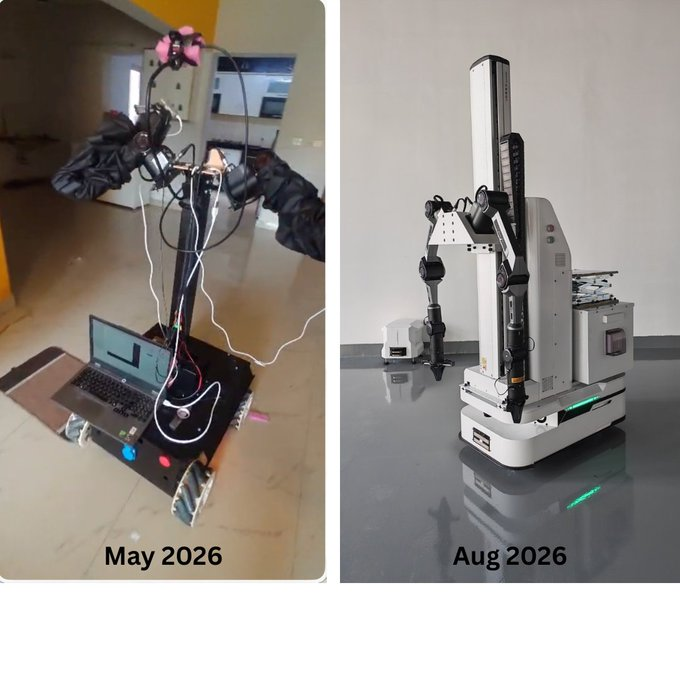

We are digitizing the physical world. Everything that has been digitized can be learned.
At Argon Robotics we build simulated worlds where robots learn, and fail, before they ever touch the real one.
We're contributors to Newton and MuJoCo Warp, the physics engines NVIDIA and DeepMind build on, and to open research like Terminal-Bench.
We'll be at CoRL, and we're hiring. Come say hi, or email me if you're up for a good conversation about robots, world models or LLM research.

Pranay Gupta @PranayGupt97167 · Sep 24 We trained a robot policy to run at ~4x faster than the teleop data they were trained on. It held >95% success rate across 500 real-robot runs. Here’s a thread on our first blog 🧵 Deepanshu Rohilla @Deepans36819800 · Aug 24 Just make it exist first, you can make it good later